内容要点
这组截图其实是三条线拧在一起：应届生怎么选大厂岗位、阿里多轮面试每一面考什么、小米多轮面试每一面考什么。共同点是：大厂面试几乎都是 3～4 轮，每轮面试官立场不同，一套话术打天下很容易挂；选岗则强调「性格特质适配」高于「岗位虚名」。
知识结构
认清三类人 → 警惕高大上岗名 → 研发算法要长期深耕 → 勿轻视运营市场 → 产品数据项目是稳健赛道 → 实习是底牌 → 高匹配赛道 → 简历写法；收束句：没有绝对好坏，只有适配。
一面验货（骨干深挖项目）→ 二面 Owner 与业务规划（主管）→ 三面格局与价值观（跨业务/总监）→ 四面 HRG「闻味道」；附两道高杠杆反问。
一面同样扣细节验真；二面看业务思维与潜力；三面格局与「人车家」战略共鸣；四面 HR 找同道中人，强调发烧友精神与厚道；反问多一道「和用户交朋友」怎么落地。
先用性格与抗压匹配赛道，再用「每轮换剧本」打面试：一面证明你做过，二面证明你会想，三面证明你站得高，四面证明你是同路人。反问用来确认紧急需求与卓越标准，不要在匹配面谈薪假。
专题一应届生大厂选岗：八条完整建议
1. 先认清自己是哪一类应届生
适配互联网大厂的应届生大致分三类：
- 技术钻研型：喜欢敲代码、深耕技术、钻研项目。
- 逻辑统筹型：擅长梳理流程、拆解需求、统筹对接。
- 外向落地型：擅长沟通对接、落地执行、拓展资源。
不同特质，岗位适配度天差地别。擅长编程、耐得住打磨、热爱技术深耕 → 研发、算法、测试岗很适配。逻辑清晰、擅长拆解业务、统筹协作 → 产品、项目管理岗更合适。性格外向、执行力强、擅长对接沟通 → 各类运营、市场、商务岗能让你快速出彩。
关键判断
别被专业固化思维束缚：性格特质和岗位匹配度，远比专业对口更重要。
2. 别盲目追高大上的岗位名头
很多应届生跟风追捧「算法工程师、策略产品、数据分析师」这类高端岗位，看似含金量高，实则门槛极高、成长周期长、前期变现慢。
应届生入职策略、算法岗，前一两年基本以打杂、跑数据、复盘基础业务为主，很难独立负责项目，成就感极低。反而被很多人低估的内容运营、用户运营、电商运营、商务渠道岗，入门友好、落地性强，成长速度快，薪资弹性大，短短三五年就能积累核心业务能力、实现薪资跃升。
所以选岗要看自身基础、抗压能力和长期规划，切勿只看岗位虚名。
3. 研发算法岗虽香，但要做好长期深耕的准备
研发、算法是互联网大厂的核心高薪岗位，但学历和能力门槛逐年提升。普通本科应届生入职大厂研发岗，大多只能负责基础迭代、代码维护、测试补位等基础工作，很难接触核心项目。
- 如果未来有读研、读博深耕技术的规划，可坚定技术赛道。
- 如果没有深造计划，本科技术岗在大厂晋升速度极慢，极易遇到职业瓶颈。
谁适合 / 谁不适合
这类岗位只适合热爱钻研、耐得住寂寞、能接受长期打磨的人，不适合急于求成、想快速出成果的应届生。
4. 运营市场岗千万别轻视
很多应届生觉得运营、市场岗门槛低、技术含量不足，盲目嫌弃。如今大厂运营早已不是简单的发帖、控评、做活动，而是围绕用户增长、GMV 提升、品牌推广的核心业务岗，直接关联公司营收。
字节、美团、拼多多等头部大厂的运营体系、新人培养机制非常成熟，能快速锻炼业务思维、统筹能力和落地能力，积累经验后跳槽选择多、适配岗位广。只要你执行力强、逻辑清晰、抗压性好，这类岗位是应届生快速立足大厂的优质选择。
5. 产品、数据、项目岗：细水长流的稳健赛道
这类岗位适配追求稳定发展、注重职场沉淀的应届生，工作节奏相对规律、业务技术性强、通用性高。
- 产品岗：完整掌握从需求调研、方案设计到落地迭代的全流程，是互联网行业通用性极强的核心能力。
- 数据岗、项目岗：积累系统化的业务思维和统筹能力；深耕三五年后，薪资涨幅和职业发展空间都十分可观。
但要注意：这类岗位需要极致细心、持续复盘沉淀，要做好长期深耕、稳步积累的心理准备。
6. 大厂实习是求职核心底牌
千万别等到秋招才临时了解岗位、投递简历。互联网大厂校招极度看重实习经历。越早实习，越能直观区分技术、产品、运营、市场岗的真实工作内容，找准自身适配方向。
哪怕暑期短实习，也能摸清大厂节奏与商业模式，识别岗位差异，积累项目经历，弥补校园经历不足。
7. 三类高匹配、高红利赛道（截图原文）
- AI 应用与大数据：大模型落地、数据开发、AI 产品等；需求旺盛、人才缺口大。不只顶尖算法才能进，普通应届生也能找到合适入口。
- 网络安全与信创：政策托底，需求稳、岗位稳、薪资有溢价，年龄焦虑相对弱于部分互联网赛道。
- AI 加持的运营：内容 / 用户 / 电商运营结合 AI 工具；全行业招人、门槛相对友好、跳槽面宽，是非技术背景同学的优质赛道之一。
8. 简历写法：按 JD 定制，不要一份通投
- 别写成流水账履历，按 JD 关键词贯穿全文。
- 经历突出项目结果与数据，用「行动 + 行为 + 结果」句式替代空话（接近 STAR）。
- 零基础也要从课程设计、校园项目、短实习里挖，并尽量对齐目标岗位业务。
- 删冗余：无关社团、通识经历可砍；一页为佳。
- 分赛道定制：技术岗突出代码与落地项目；产品 / 运营岗突出复盘、增长指标与执行结果。严禁一份简历通投所有岗位。
选岗收束原句
互联网岗位没有绝对的好坏，只有适配与否。求职择业不用盲从身边人的选择，也别轻信某岗位最有前景的片面言论。大厂每个主流岗位都能走出高薪精英，核心在于能不能沉下心深耕三五年，把单一方向做到极致。
专题二阿里面试：四面各打什么
大厂面试通常多轮（一面、二面、终面）。阿里常见四轮。每一面的面试官角色与考察重点完全不同，不能用同一套话术硬套。
一面：技术骨干「验货」
面试官通常是你将加入团队的资深技术骨干。核心目标是验货——核对简历上的技术经历是否真实。
风格是对项目细节反复深挖：遇技术难点时怎么想、方案怎么比、为何最终这么选。常见挂点：一问细节就含糊（「经不起追问」）；方案太常规，没有个人亮点。
准备三件事
- 用 STAR 吃透核心项目：数据、痛点、个人贡献必须清楚。
- 了解目标业务线（电商 / 云 / 本地生活等），想清楚技术经验如何迁移。
- 准备「快速解决问题」的工程案例——阿里很看重实战落地与现场解题能力。
二面：未来直属主管——从「会不会做」到「为什么这么做」
面试官多半是未来直属 leader。仍看技术底子，但更重业务思维与技术规划：系统如何迭代、资源紧时如何取舍、跨团队如何协作。
常见挂点
思路停在「被动执行」；缺少主动思考与 Owner 意识。
准备三件事
- 对本领域有基本认知（如中间件稳定性治理、面向业务的增长逻辑等）。
- 准备一个「从发现问题到推动落地」的完整案例。
- 表达对阿里业务与用户的真实理解与兴趣。
三面：跨业务负责人 / 总监——格局与文化匹配
面试官常为跨业务线负责人或总监。考察技术视野、软素质、价值观匹配。问题更宏观：行业趋势判断、复杂架构权衡、多团队协作冲突怎么处理。
常见挂点
往往不是技术不行，而是格局不够、自我中心，或对「客户第一」「团队合作」等价值观理解浮浅。
准备三件事
- 了解阿里战略方向（如全球化、云计算、AI 驱动），形成自己的看法。
- 准备跨团队沟通、争取资源、达成共赢的案例。
- 真诚展现务实、皮实、敢担责。
四面：HRG（政委）——终极「闻味道」
第四轮是 HRG，被描述为终极闻味道：看你的「气味」是否与阿里文化合拍。HR 会系统梳理职业轨迹、动机与长期规划，并深挖性格与价值观底子。
三挂点
- 不稳定：履历跳跃、叙事断裂。
- 不真实：答案过于套路。
- 不匹配：价值观根本拧巴。
准备三件事
- 理顺职业叙事：每次跳槽都有正向、合理的解释。
- 真心理解并认同公司文化，回答才会自然有感染力。
- 准备有洞察力的反问，例如：「这个岗位当前最大的挑战是什么？」「公司对技术人员的长期期待是什么？」
专题三小米面试：四面各打什么
像小米这类业务线很长的大厂，面试通常也很严，常见 3～4 轮。每一面面试官立场不同，一套稿打四轮很容易挂。
一面：核心同事——深挖业务 / 技术细节
一面通常是核心团队成员或直接同事，目标是扣细节验真：把简历项目拆碎，追问场景思考、解题方法、具体方法论。
常见挂点
经历经不起追问、细节含糊，或方法太常规、拉不开差异。
准备三件事
- 用 STAR 复盘 1～2 个核心项目：数据、困难、个人贡献要清楚。
- 研究小米产品线（手机、生态链、汽车等），想清楚经验如何落到这些业务。
- 准备若干「动手解决小问题」的案例——小米看重工程落地与务实精神。
二面：部门主管 / 项目负责人——业务思维与潜力
二面通常是部门主管或项目负责人（未来直属 leader）。除业务基本功外，更看业务思维与潜力：跳出单个任务，看你如何理解功能模块迭代、如何取舍、如何协调资源；也在判断你进团队后能不能快速上手、带新想法。
常见挂点
思路停在执行层，缺产品感与 Ownership（主人翁意识）。
准备三件事
- 对本领域有基本认知：硬件要懂供应链与品控关键点；软件要懂用户体验与数据驱动逻辑。
- 梳理一个从发现问题到推动落地的全过程案例。
- 表达对业务及其用户群体的真实理解与兴趣；也可借助求职辅导系统练习，形成自己的思路框架。
三面：交叉面 / 总监面——格局、软素质与价值观
可能是其他业务线负责人交叉面，或总监面。站位更高：格局、软素质、价值观是否匹配。问题偏宏观（行业趋势、假设性战略题），也爱问多方协作的复杂情况你怎么处理。
常见挂点
通常不是技术不行，而是思维偏狭、协作过于自我，或价值观不符（例如对「极致性价比」理解有偏差）。
准备三件事
- 了解小米发展史与近期战略（如「人车家全生态」），形成朴素但自己的看法。
- 准备跨团队沟通、争取资源、达成共赢的案例。
- 回答真诚，展现务实、有韧性、愿意拥抱变化——这很「小米」。
四面：HR 面——终极匹配度，找「同道中人」
HR 系统核对职业轨迹、离职动机、长期规划，以及性格与价值观底子。小米文化鲜明，HR 在找同道中人。
核心挂因
不稳定、不真实、不匹配。例如：规划混乱；每次离职都归咎外部；对「发烧友精神」「厚道」无共鸣；背调出现出入。
准备三件事
- 熨平职业叙事，段与段之间逻辑正向。
- 真诚理解并认同小米文化，回答才自然。
- 准备有深度的反问，如团队当前最大挑战、公司对该岗位的长期期待等。
专题四通用反问与收束
提问环节是关键机会。截图建议这几道就够，不要问太多；匹配面不要问薪资和假期。
如果我有幸加入，入职前 3～6 个月，您最希望我优先在哪个方面为团队创造价值？
在您看来，这个岗位上「做得好」和「做得特别出色」的同事，主要差别在哪里？
小米倡导「和用户交朋友」，在咱们日常工作流里具体怎么体现？
阿里 vs 小米：对照表
| 轮次 | 阿里侧重点 | 小米侧重点 |
|---|---|---|
| 一面 | 骨干验货；工程落地与快速解题 | 同事扣细节；务实与动手解决小问题 |
| 二面 | Owner、业务规划、跨团队 | 业务思维、潜力、产品感 |
| 三面 | 格局；客户第一 / 团队合作 | 格局；人车家战略；极致性价比理解 |
| 四面 | HRG 闻味道 | HR 找同道；发烧友精神 / 厚道 |
① 用三类人格对照自己，写下「适配岗位 / 不碰岗位」各 3 个；② 每条目标岗准备 1 份定制简历；③ 核心项目按 STAR 写到能扛三层追问；④ 阿里线补业务迁移与 Owner 案例，小米线补产品线映射与人车家看法；⑤ 背熟两道通用反问，小米再加一道文化落地题；⑥ 尽早拿实习验证赛道，而不是秋招才第一次了解岗位。
附录原始截图（13 张全文依据）
以下按文件名顺序附录，便于对照原文。正文已覆盖全部文字内容；图中为聊天气泡原貌。
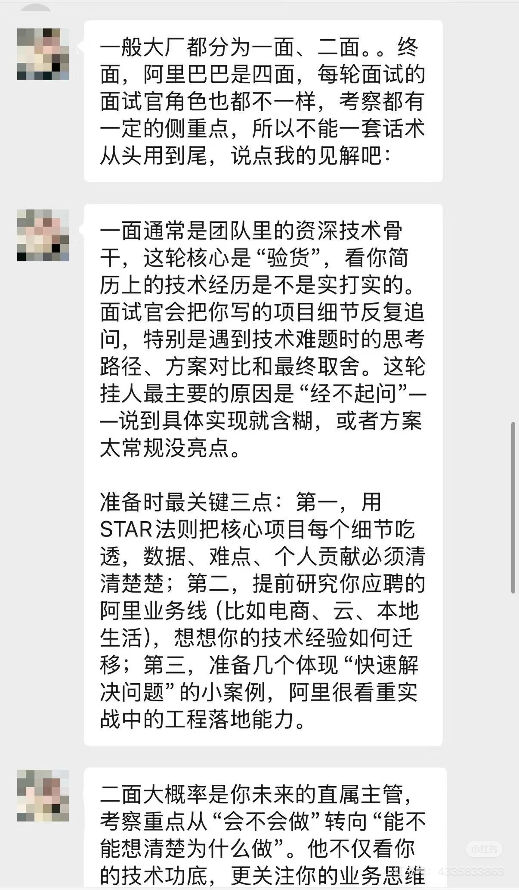
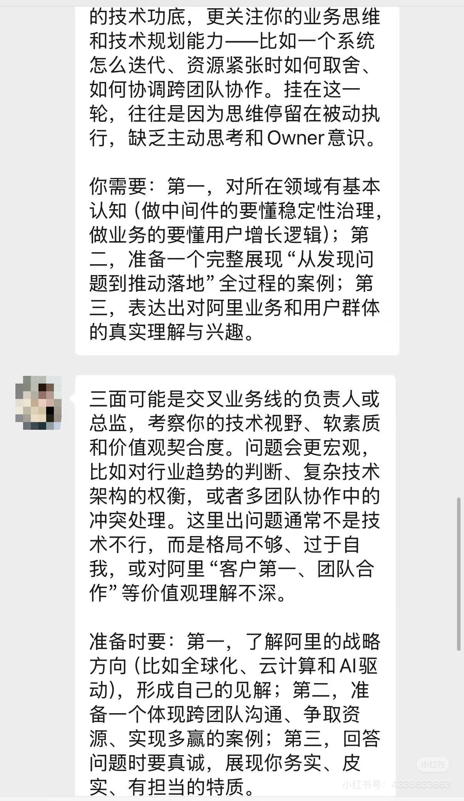
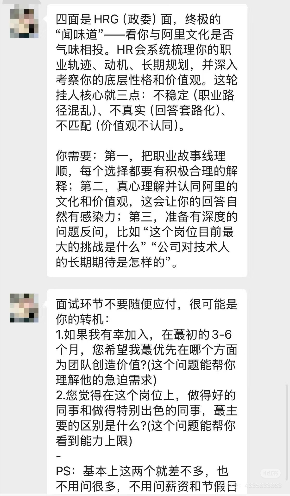
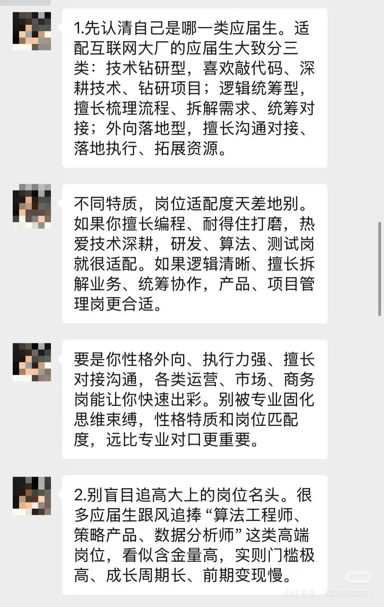
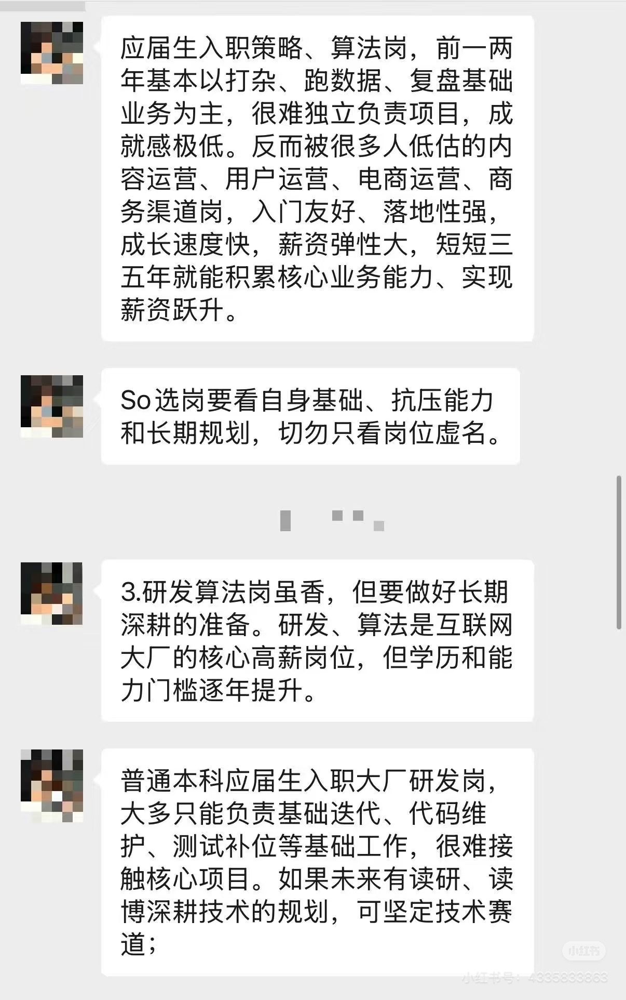
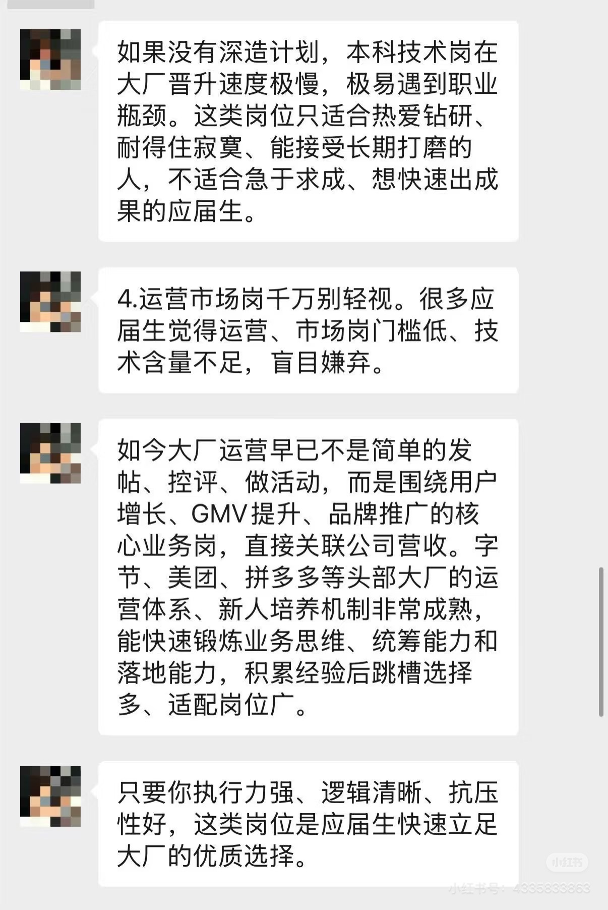
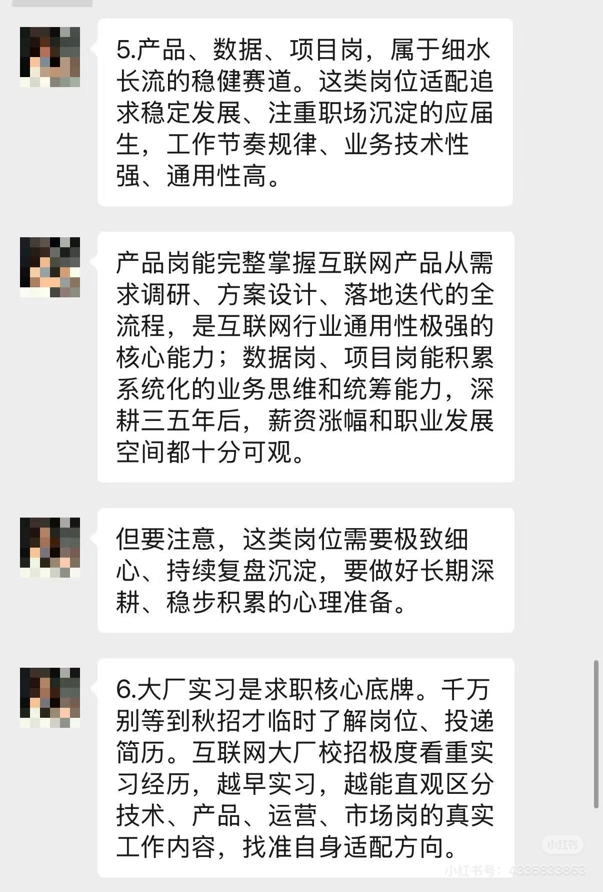
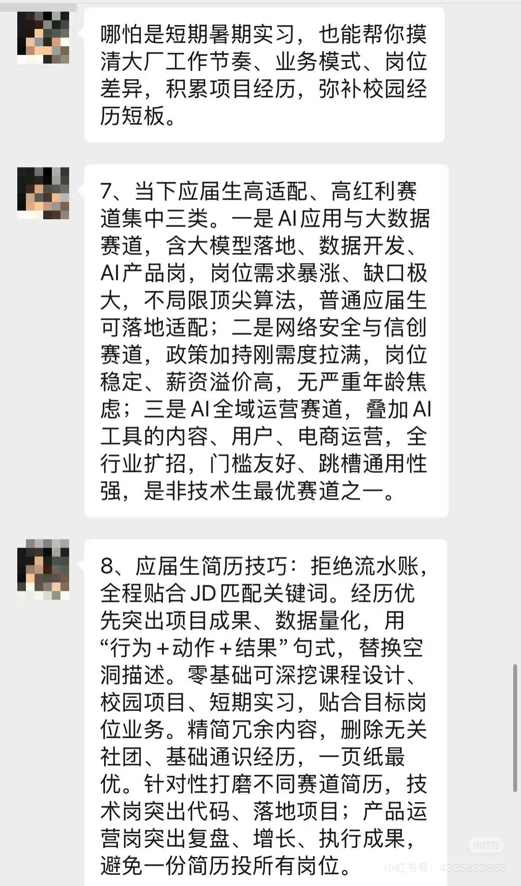
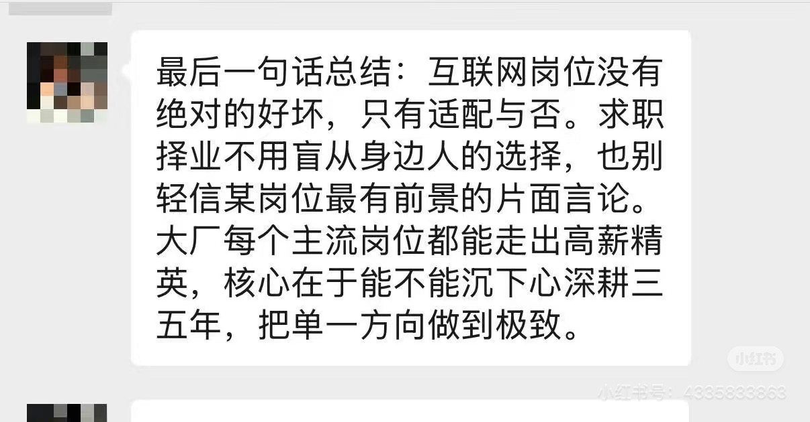
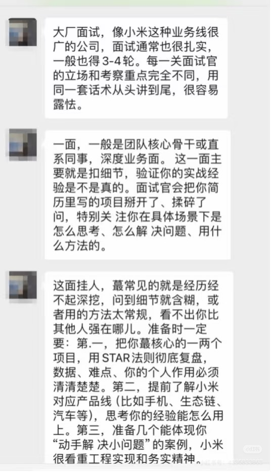
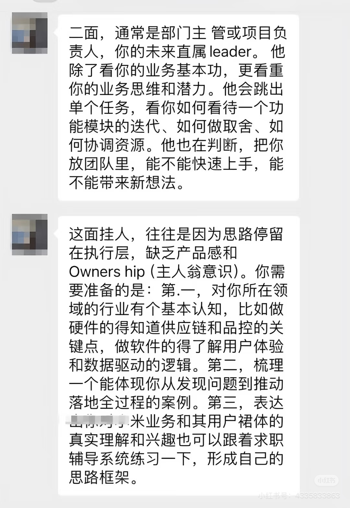
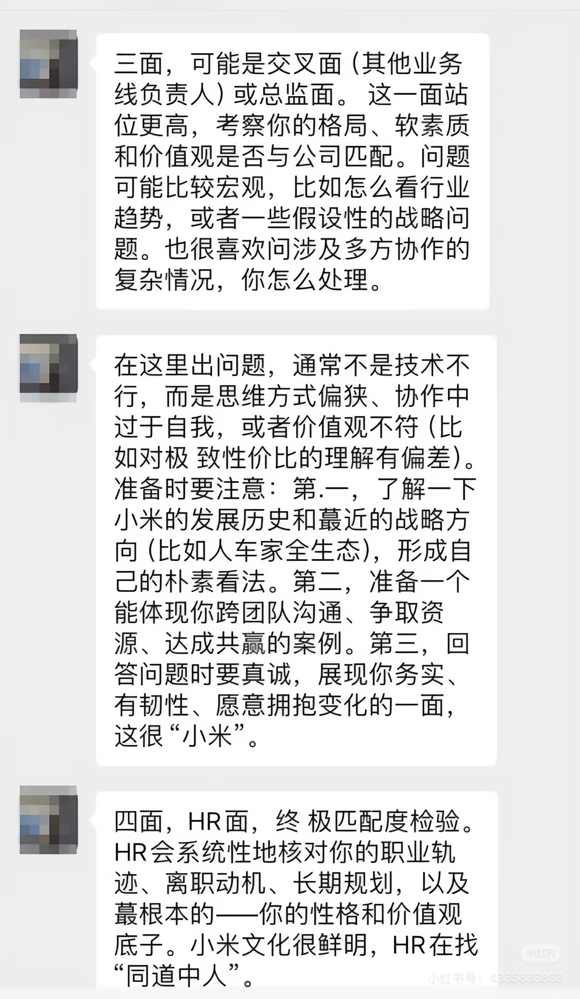
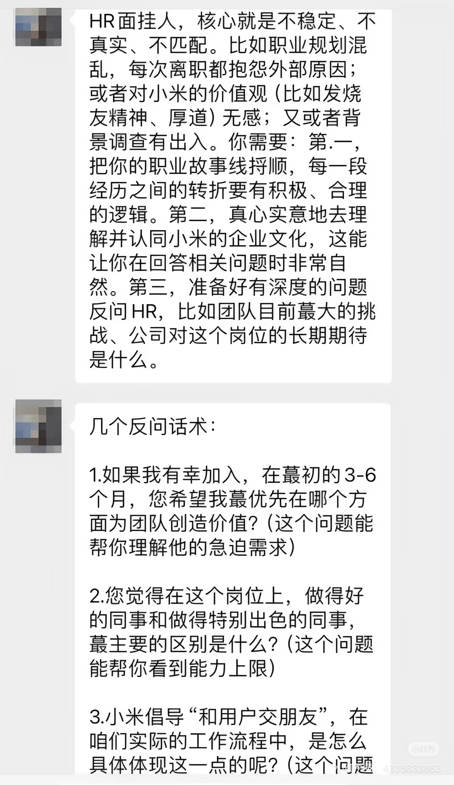